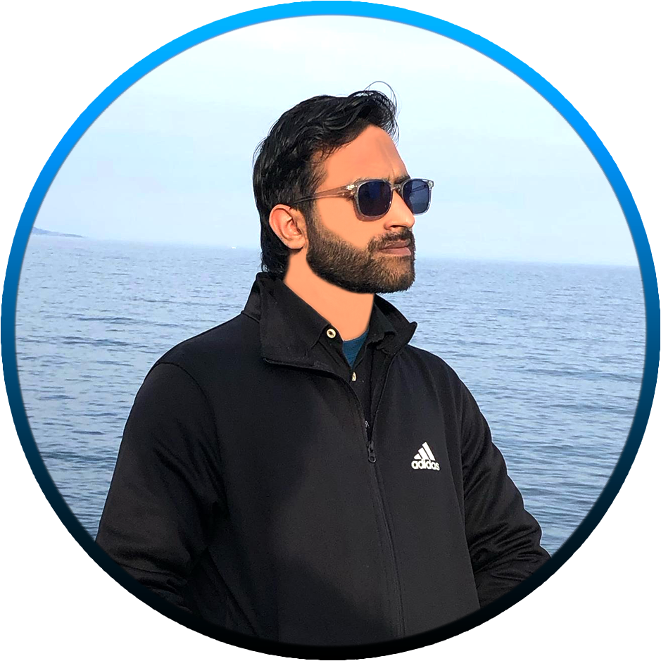

I am a PhD researcher in the COMELEC department at Télécom Paris, working within the ANR SCAMA project. My research covers pre-silicon security validation, ISA-level mitigations, side-channel analysis and microarchitectural vulnerability assessment for RISC-V processors, combining gem5 simulation, machine learning and validation on real hardware such as the SiFive HiFive Premier P550.
News
Research
My work follows the processor security lifecycle. I find leakage and fault paths early in simulation, design mitigations at the ISA level, and then confirm both attacks and defenses on commercial RISC-V silicon.
Lock-free, ISA-level Spectre V1/V2 mitigations that use RISC-V lr.w.aq/sc.w.rl
instead of serializing fences. On the SiFive HiFive Premier P550, a batched variant (N=16) is
2.8× faster than fence-based protection with a 0% store-conditional failure rate.
A privilege-boundary attack in which crafted illegal instructions from user mode travel through kernel trap
handling into OpenSBI's unhandled-fault path (sbi_trap_error() → sbi_hart_hang()),
persistently halting a RISC-V hart. Validated on the P550 via JTAG/OpenOCD.
Targeted ISA-level instrumentation in gem5 for pre-silicon RISC-V security evaluation. It exposes security-relevant microarchitectural events at instruction granularity. The journal version adds a full instrumentation-overhead analysis.
gem5Pre-siliconISA InstrumentationCombines static code features (AST/CFG/DFG) with gem5 runtime signals to detect Spectre-variant leakage, using supervised models (XGBoost, ~97% accuracy) and unsupervised ones (HDBSCAN, Isolation Forest). ISA-level masking wrappers on the P550 cost only 1.6% runtime overhead. The journal extension explores graph-based learning on CFG/DFG.
XGBoostGraph LearningMaskingA pre-silicon framework for side-channel vulnerability analysis. Version 2.0 adds ARM architecture support, a live execution engine and a new detector suite, and an open-source release is planned.
Pre-silicon SCARISC-V & ARMToolingA gem5-based framework for modeling IoT microcontrollers together with their peripherals and firmware, with ML-driven design-space exploration and anomaly detection. Validated against hardware measurements on a Zynq-7000 Cortex-A9.
IoTDSEFirmwareExpose leakage sources in gem5 (O3 pipeline, caches, predictors) with ISA-level instrumentation.
Use machine learning on static and runtime features to flag vulnerable code patterns and attack behaviors.
Design lightweight, deployable mitigations such as atomic guards and masking wrappers.
Confirm attacks and measure overhead on commercial RISC-V hardware (SiFive HiFive Premier P550).
Open Source
Community
Supervised by
Maria Mushtaq, Lirida Naviner (Télécom Paris), Florent Bruguier (LIRMM) and Jawad Haj-Yahya
Get in Touch
I'm happy to discuss collaborations on RISC-V security, speculative-execution defenses, pre-silicon validation and side-channel analysis.